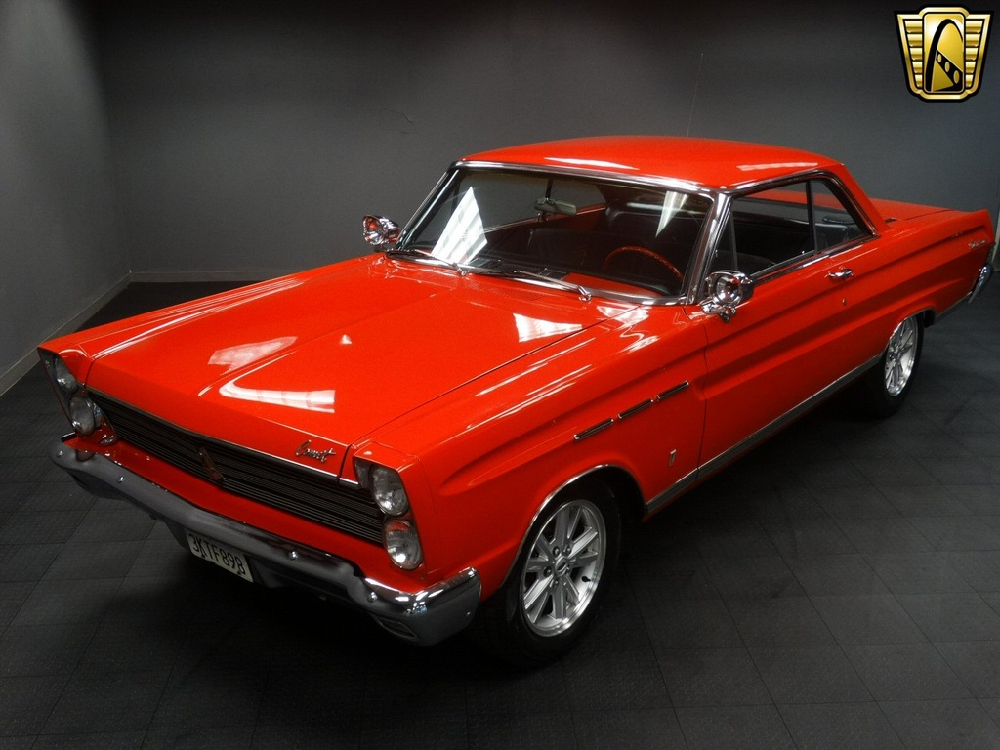
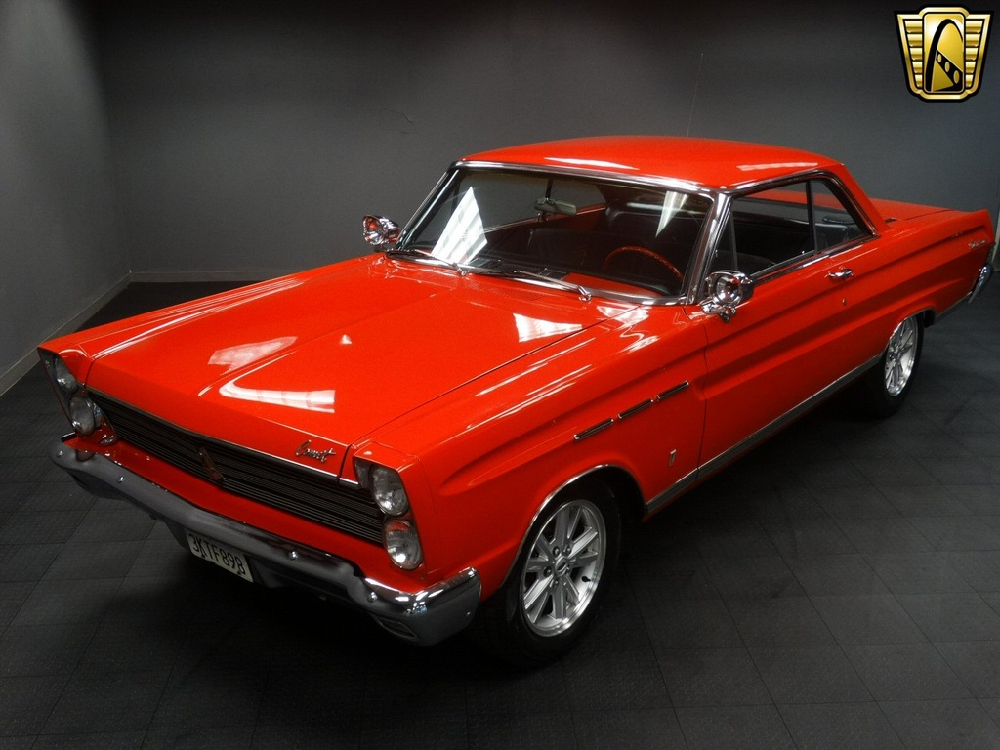

Mercury Comet
HISTORY
History
1960-1972
Introduction: The Mercury Comet was the everything car for Mercury. Introduced in 1960 on a stretched Falcon frame, the Comet had to be Mercury’s compact, intermediate, and pony car entry at the same time. But through continuous refinement, the Comet, and its spinoff variations the Cyclone and Spoiler proved to be quite a worthy muscle car.
1960 Comet
The Comet was developed as a compact car for the Edsel line. But with the Edsel brand eliminated before the 1960 model year, Ford released the Comet as a separate model, that was sold by Lincoln-Mercury dealers. The Comet was based on a stretched Falcon frame. The sedan’s wheelbase of 114 inches suggested intermediate, but Mercury positioned it as a compact.
Production:
Engines:
Performance:
1961 Comet
The Comet continued as its own model (not a Mercury) for 1961, but the big news was the introduction in late 1961 of the S-22 model. The S-22s were 2-Door Comets with the addition of Moroccan vinyl bucket seats, a center console, a unique stainless spoked steering wheel with a S-22 center, upgraded carpeting, unique rear quarter panel emblems, undercoating, and special stainless full wheel covers. The standard powertrain was the 170 cubic inch inline six cylinder engine coupled with the two-speed Comet Drive automatic.
Production: S-22: 14,404
Engines: 170 I6.
Performance:
1962 Mercury Comet
The Comet officially became part of the Mercury line in 1962.
Production:
Engines:
Performance:
1963 Mercury Comet
The Comet received its first V8 (along with the Falcon) for 1963. There was room only for a small block and the first was a 260 cid V8 rated at 164 bhp.
Production:
Engines: 260 V8 164 bhp.
Performance:
1964 Mercury Comet
The Mercury Comet was restyled for 1964 and got the Cyclone Super 289 V8 added to the option list. It was rated at 210 bhp. The Comet got a boost in its performance image when a fleet of Comet Caliente hardtops averaged more than 105 mph for 100,000 miles in Daytona. They had the high performance 289 V8 rated at 271 bhp which was not available in the production model. Specially built drag racing Comet’s with 427 big blocks also were making some noise on the tracks. To capture some of this excitement, Mercury announced the Cyclone two-door hardtop in January of 1964. It came standard with bucket seats, console, wheelcovers that looked like chrome wheels and chrome engine dress-ups for the 210 bhp 289 engine.
Production: 2D Hardtop: 7,454
Engines: 289 V8 210 bhp.
Performance:
1965 Mercury Comet Cyclone
The Comet received a slight performance boost in 1965 as the 289 V8 was upgraded to 225 bhp. Though not technically available, some Comet’s snuck out of the factory with the special order 289 V8 with 271 bhp and some even received the wild SOHC 427 V8.
Production: 2D Hardtop: 12,347
Engines: 289 V8 225 bhp.
Performance:
1966 Mercury Comet Cyclone
The Comet was all new for 1966 and shared its chassis and body shell with the Ford Fairlane, making it a true intermediate. Wheelbase grew to 116 inches, and front track was increased three inches to 58 inches, finally allowing room for big block engines. Styling was plain, though decent, and a convertible was added for the first time. Both body styles had standard bucket seats and console. Available on both the two-door hardtop and the convertible was the new GT option, costing just $452. The GT option included the new 390 cid V8 rated at 335 bhp, which had a four-barrel carb, dual exhausts, engine dress-up kit, fiberglass hood with non-functional scoops, handling package, front disk brakes, and optional four-speed manual or automatic transmission (a three-speed manual was standard) and GT striping and badging. A Comet even paced the Indianapolis 500, though no factory replica editions were sold.
Production: Comet Hardtop: 6,889. Comet Convertible: 1,305. Comet GT Hardtop: 13,812. Comet GT Convertible: 2,158.
Engines: 390 V8 335 bhp.
Performance: 390/335: 0-60 in 6.7 seconds.
1967 Mercury Comet Cyclone
The Comet had an identity crisis in 1967 when the Comet name was only attached to the cheapest 202 model in Mercury’s intermediate lineup, which strangely had no real name other than “intermediate.” The Cyclone and GT Performance Group were relatively unchanged, but the top 390 engine was rated at just 320 bhp. Sales were down considerably due to the introduction of the Mercury Cougar.
Production: Comet Hardtop: 2,682. Comet Convertible: 431. Comet GT Hardtop: 3,419. Comet GT Convertible: 378.
Engines: 289 V8 200 bhp. 390 V8 320 bhp.
Performance:
1968 Mercury Cyclone
The Comet was restyled for 1968, but kept the same 116 inch wheelbase. Basics were shared with the Ford Fairlane, and the Comet got new styling, larger dimensions, and a fastback coupe body style. The fastback style was an instand hit, selling 6,105 units to the notch back’s 334 units. The convertible was dropped. Mercury continued to confused the public by alternately refering to its intermediates as either the Montego or just the Mercury intermediates. A two-barrel 302 cid V8 rated at 210 bhp was standard in all Cyclones. The GT option was still available and added only $168 to the $2,768 base price. But instead of a true performance option, the GT option only added bucket seats and trim changes. The engine lineup included a four barrel 302, two 390 cid V8s, and the strong 427 V8 rated at 390 bhp. This engine was available only for a few months, when Mercury replaced it with the 428 Cobra Jet V8, under-rated at 335 bhp.
Production: Fastback GT: 6,105. Notchback: 334
Engines: 302 V8 210 bhp. 302 V8 230 bhp. 390 V8 265 bhp. 390 V8 325 bhp. 427 V8 390 bhp. 428 Cobra Jet V8 335 bhp.
Performance: 428/335: 0-60 in 6.2 seconds.
1969 Mercury Cyclone
Only the Fastback body style returned for 1969. The GT option was reduced to just an appearance group option. However, the new hot Cyclone was the CJ, which was aimed at the budget priced Plymouth Road Runner. The CJ came with the 428 Cobra Jet rated at 335 bhp standard, along with a four-speed manual transmission, Competition Handling Package, and a plain bench seat interior. It sold for $3,224, compared to the standard Cyclone’s 302 priced at $2,771. But the truly hot Cyclone was the Cyclone Spoiler II, which was modified to improve its aerodynamics for use in NASCAR races. A total of 519 were made, all with 351 cid four barrel V8s, despite initial announcements that there would be a 428 Cobra Jet option. Spoilers came in two trim versions, named after Mercury NASCAR drivers. The Dan Gurney Spoiler had a dark blue roof and striping and a signature decal on the white lower portion. The Cale Yarborough edition featured red trim and a signature decal.
Production: Cyclone Spoiler: 519
Engines: 428 Cobra Jet V8 335 bhp.
Performance:
1970 Mercury Cyclone
The Mercury Cyclone was restyled for 1970, though not for the better. The wheelbase grew an inch to 117 inches, but the overall length grew by 6.7 inches. The latter was due to a new protruding nose and fender design, that sported a gunsight-type design in the grille center. While its Ford Torino cousin got new fastback designs, Mercury intermediates did not, and also lost the convertible for its Montego series. The Cyclone hardtops had trunk lines about halfway between the old notchback hardtops and the fastbacks. There were three Cyclones for 1970, the base model, the Cyclone GT, and the Spoiler. The base Spoiler came with the 429 V8 rated at 360 bhp, a four-speed manual with Hurst Shifter, the Competition Handling Package, 3.25:1 rear end gearing and a bench seat. Options included the 370 bhp CJ 429, 375 bhp Super CJ 429 and in some cases, the Boss 429. The GT had only a lowly 351 cid V8 rated at 250 bhp. The new Cleveland 351 was optional.
Production: 13,496
Engines: 351 Windsor V8 250 bhp. 351 Cleveland V8 285 bhp. 429 V8 360 bhp. 429 Cobra Jet V8 370 bhp. 429 Super Cobra Jet V8 375 bhp. 429 Boss V8 .
Performance:
1971 Mercury Cyclone
The Mercury Cyclone continued into 1971 with the same styling, but engine choices changed with the 351 Cleveland V8 now standard for the Spoiler and the Cyclone and the 351 Windsor standard in the GT. 429s were still available, but the hottest versions were gone.
Production:
Engines: 351 Windsor V8 240 bhp. 351 Cleveland V8 285 bhp. 429 V8 360 bhp. 429 Cobra Jet V8 370 bhp. 429 Super Cobra Jet V8 375 bhp.
Performance: 3,584
1972 Mercury Cyclone
The Cyclone was reduced to just an option package for 1972. This would be the last year of the Cyclone. The Comet name would continue on as the companion to the Ford Maverick compact, but its muscle car days ended in 1972.
Production:
Engines: 351 V8 250 bhp. 429 V8 360 bhp. 429 Cobra Jet V8 370 bhp. 429 Super Cobra Jet V8 375 bhp. 429 Boss V8 .
Performance:


 

{kind=link}


{kind=link}